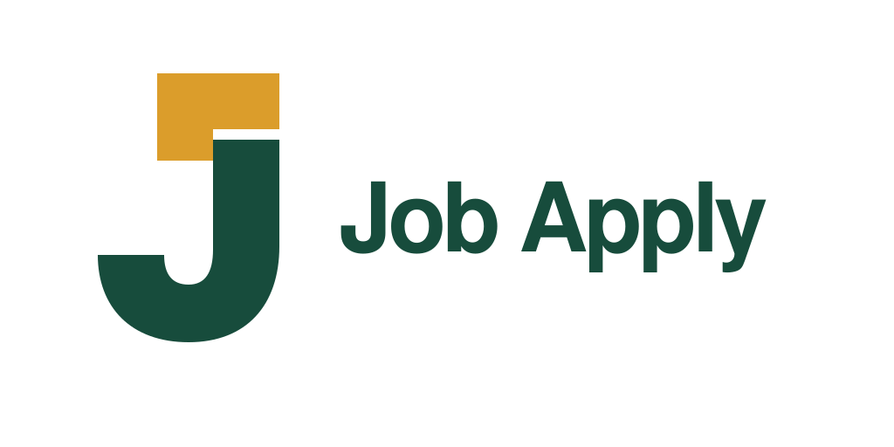
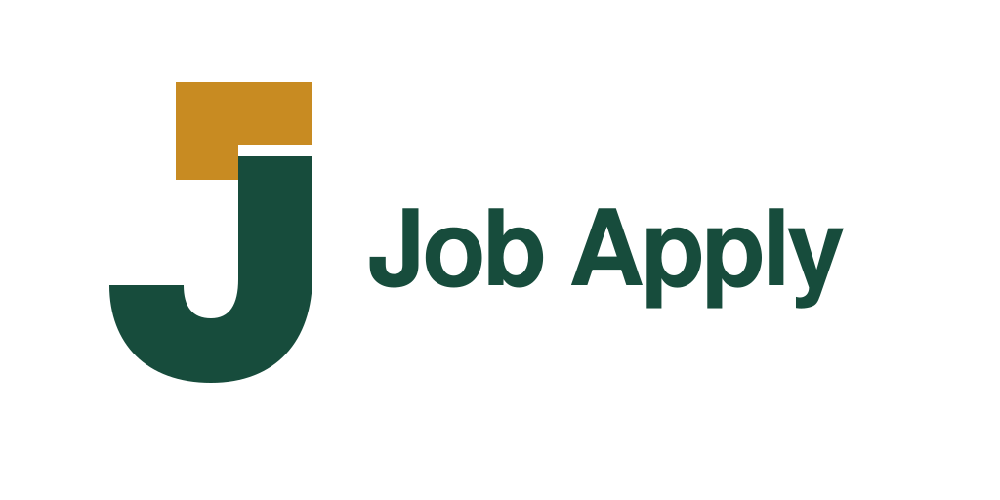
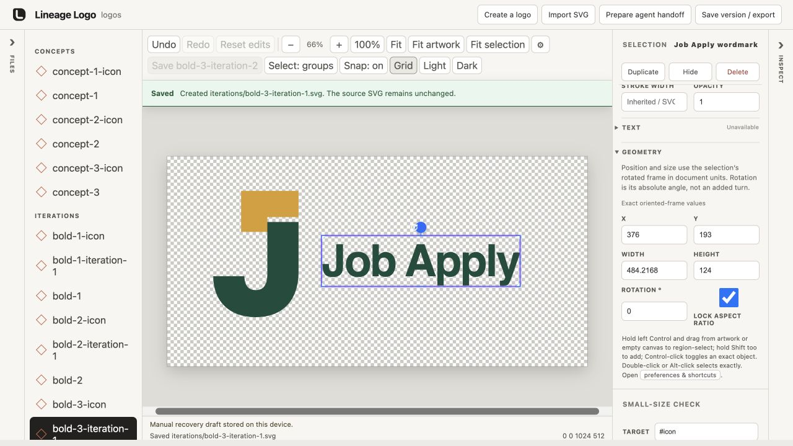
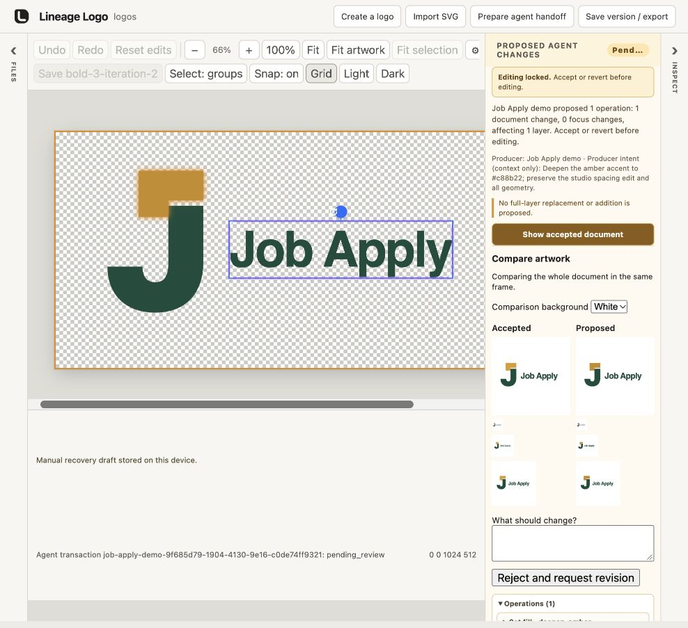
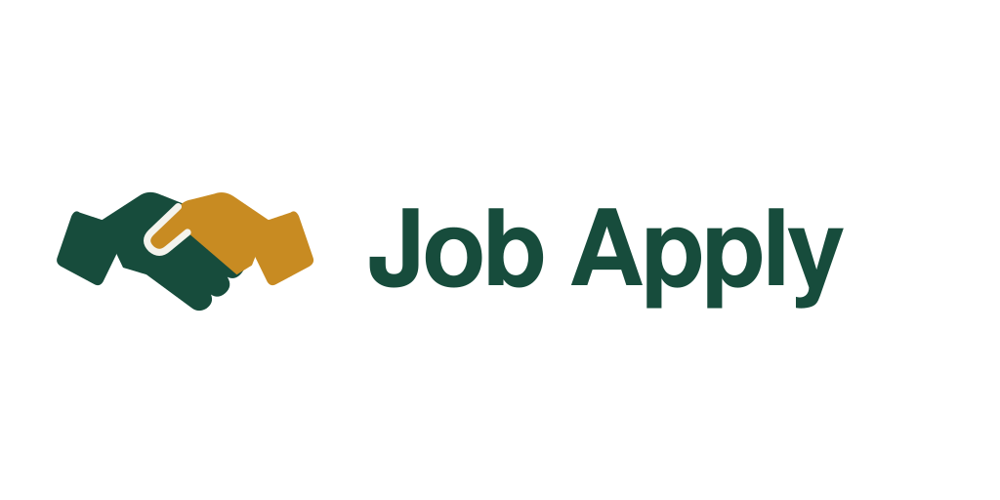
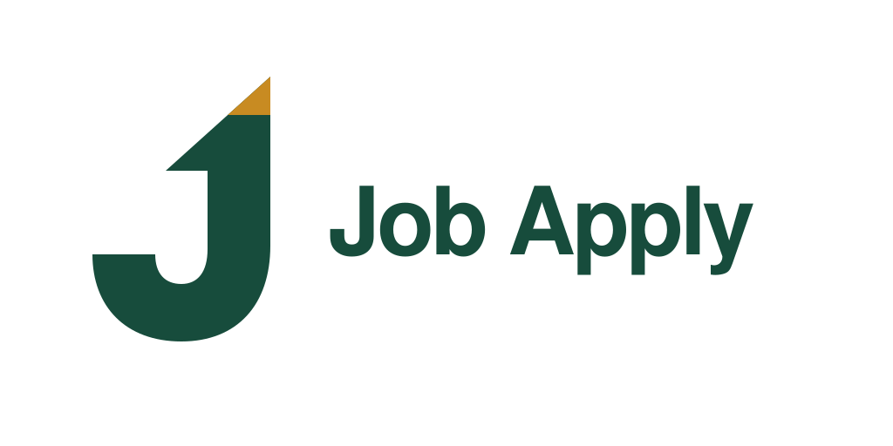
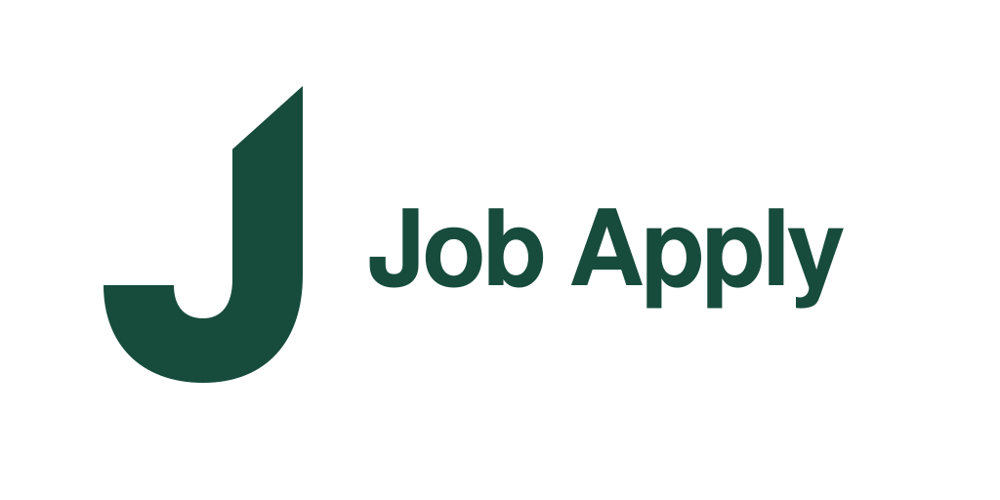
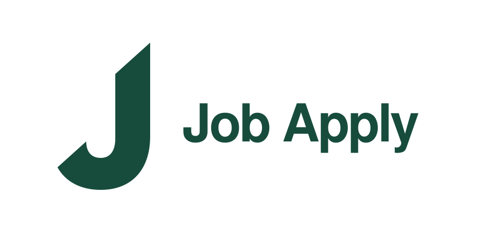
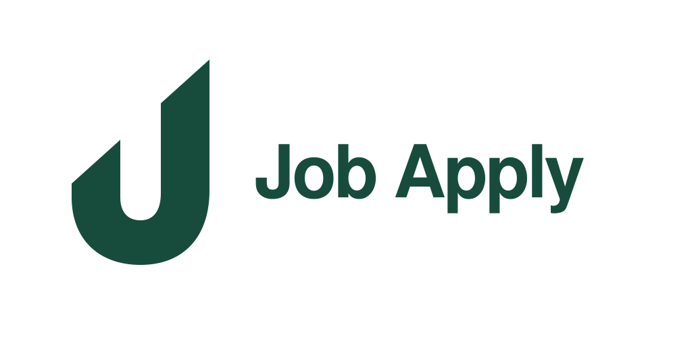

Document + check
A familiar application metaphor.
DESIGNER → STUDIO → REFINEMENT → EXPORT
The final mark is a single forest-green J with unequal stem heights and aligned diagonal cuts. It suggests upward progress without a separate arrow or a sign-in symbol. The original Helvetica/Arial wordmark remains intact.
The brief was a bold, professional icon plus wordmark matching the companion’s forest-green palette. Three initial directions explored completion, opportunity, and progress. All three were carried through a studio round-trip before further design exploration.
A familiar application metaphor.
An opening into the next opportunity.

A letterform suggesting progress.
The original three concepts received bolder typography. In Lineage Logo Studio 0.1.1, the wordmark was moved left by 16 units for direction 1 and right by 16 units for directions 2 and 3. Each manual edit was saved. A subsequent agent proposal changed only the amber accent to #c88b22. Proposed previews were reviewed, accepted, and saved; artifact digests and preserved spacing were checked before export.
This was an agent-operated demonstration, including the review clicks, rather than an unfamiliar-user usability test.
The original J direction after the wordmark was moved 16 units to the right in the studio.

An agent changed only amber from #db9d2b to #c88b22; the saved spacing was retained.


Partnership, handshake, geometric clasp, and portal ideas were explored. The portal risked reading as a sign-in or exit symbol, so the design returned to the Rising J. The following refinements were authored directly in SVG through the designer workflow; they were not studio canvas edits.

Handshake and geometric partnership ideas were explored, then set aside.

Returning to the J: an arrow integrated at the top.

Remove the overhanging arrow and use one forest-green silhouette.

Extend the diagonal cut language to the left end.
A more balanced, U-like form while retaining unequal stem heights.

Lower the left stem until both cut edges sit on the same diagonal. Keep the original Helvetica/Arial wordmark.
A notched arrow tail and opposite-cut alternatives were also considered. After selecting the lowered left stem, two custom-J wordmarks were previewed. The final decision was to retain the original font, using the symbol only as the standalone icon.
Combination mark SVG · Icon SVG · 512px icon PNG
The designer export script produced transparent PNGs at 16, 32, 48, 192, 512, 1024 and 2048 pixels. The repository includes the SVGs and the 32px and 512px PNGs consumed by the plugin. The Companion uses the SVG for its header and browser icon. The website and repository README use the same design.
The SVG wordmark uses Helvetica, Arial, sans-serif at weight 800. Appearance depends slightly on available system fonts; the J icon is an exact vector path.
Studio screenshots document the earlier round-trip. Re-record live actions for the launch video; this walkthrough is not a finished video or evidence that the later geometry was refined on canvas.